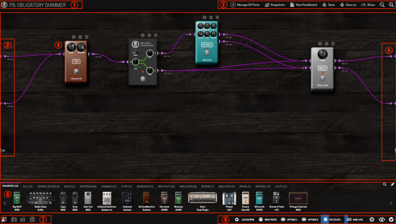
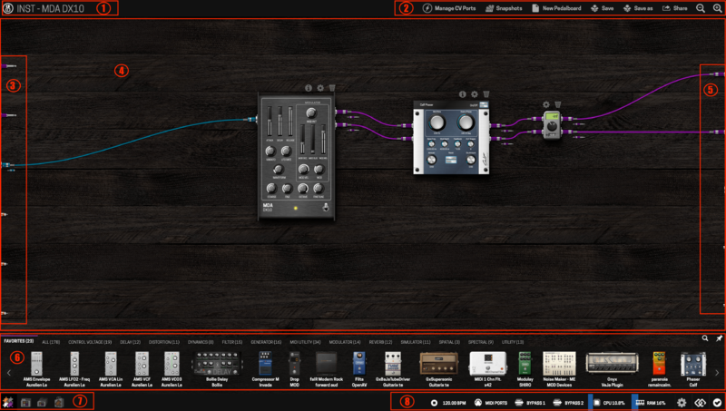
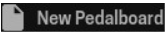
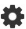
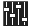
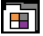
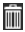

MOD Web GUI User Guide
This page describes the graphical user interface (GUI) that is used for setting up your pedalboards.
Contents
Creating a pedalboard[edit]
Once you have accessed the GUI you should see a screen like these:
| MOD Duo |
|---|
|  |
{kind=link}
| MOD Duo X |
|---|
|  |
{kind=link}
The numbered areas on the interface are:
- Pedalboard name
- Pedalboard actions bar
- Inputs
- Pedalboard constructor
- Outputs
- Plugins bar
- Mode selector (Constructor, Pedalboards, Banks and Store)
- Status bar (Device actions and information)
| MOD DUO | MOD DUO X |
|---|---|
| On the left edge of the constructor area (section 3) of the MOD DUO Web GUI there are 3 connectors: 2 audio inputs and 1 MIDI input. | On the left edge of the constructor area (section 3) of the MOD DUO X Web GUI there are 5 connectors: 2 audio inputs, 1 MIDI input, 2 CV inputs and 1 expression pedal input. |
| On the right edge (section 5) there are another 3 connectors: 2 audio outputs and 1 MIDI output. All those connectors represent the real inputs and outputs of your MOD DUO. | On the right edge (section 5) there are 5 connectors: 2 audio outputs, 1 MIDI output and 2 CV outputs. All those connectors represent the real inputs and outputs of your MOD DUO X. |
Be aware that on the interface:
- the signal flows from left to right;
- purple cables transport audio signals;
- cyan cables transport MIDI signals;
- orange cables transport CV signals.
New pedalboard[edit]
To create a new pedalboard click on the  button in the pedalboard actions bar. This action will load the default pedalboard, which is only connections from inputs to outputs.
{kind=link}
Adding and connecting plugins[edit]
To add plugins, drag-and-drop one from the plugins bar to the pedalboard constructor area. To make a new connection, click on the plugin’s output jack and drag it to where you want to connect it. To unmake a connection, click on the connected jack, then drag and release it to any empty area on the constructor.

Note that the inputs and outputs of your device are completely independent and can process multiple audio paths. The MOD devices allow you to create multiple connections coming out from the same output and also allows multiple connections to come in the same input. This feature allows the user to create complex pedalboards.
Adjusting plugins parameters[edit]
Each plugin has 3 icons on its top: info , settings  and delete . To adjust the parameters of the plugin click on the settings icon.
{kind=link}
{kind=link}
{kind=link}
{kind=link}
Each knob, list and switch represents a parameter of the plugin and can be adjusted as desired. The combination of all parameter values can be saved/loaded as a user preset and, for the cases in which they are available, factory presets can be loaded.
{kind=link}
Assigning plugins parameters[edit]
One of the most powerful features that MOD devices offer is the ability to assign plugin parameters and preset lists to physical actuators, like knobs, buttons and footswitches.
Any parameter can be assigned, but some parameters can only be assigned to a specific type of actuator. The interface will not show the actuator as an option if it is not allowed to be assigned to. Note that preset lists can also be assigned to actuators.
To create an assignment, first click on the fader icon , found on the bottom-right corner of each parameter box, to open the assignment dialog box. For the presets list you should click "Assign All" and you must have your list populated with more than one preset.
{kind=link}
It will popup a window with multiple lists, similar with the following:
{kind=link}
Removing an assignment[edit]
If you want to remove an assignment just select "None" tab and press save.
{kind=link}
Making an assignment to a MIDI Controller[edit]
If you want to assign any type of parameter to an actuator of a MIDI Controller connected to your MOD device you must select the "MIDI" tab, press save and interact with the desired actuator (for example: push the button or turn the knob).
{kind=link}
Learn more on Expanding controls / MIDI devices.
Making an assignment to a CV controller[edit]
If you want to assign a parameter to one CV controller connected to your MOD device select the tab "CV".
Other MOD devices[edit]
For other MOD devices it is necessary to create an internal CV addressing source.
{kind=link}
- For that you need to load one CV plugin from your plugins bar.
{kind=link}
Note: if you have no Control Voltage plugins available on your
plugins bar, head over to the shop and you will find pretty cool ones
for free.
{kind=link}
- Check boxes will appear next to the outputs of the CV plugin that you've just loaded. Select and label the ones that you want to use.
{kind=link}
- This way you just created an internal CV controller. Go back to the CV tab of the control you want to assign and now you will be able to see a dropdown menu with the labels that you just created on your CV plugins.
{kind=link}
Advanced Settings[edit]
There is also the possibility to adjust further options by clicking on the "Advanced" button.
By clicking on it your assignment window will stretch.
{kind=link}
On the stretched window you can:
- Define a different label that you would like to be displayed on the displays of your device;
- Enter the range that you want the mapped actuator to sweep within;
- Set the sensitivity (amount of steps from minimum to maximum) of the actuator from the dropdown menu;
- Set the operational mode polarity of your CV control.
Once you have done the adjustments, click on the save button to
execute the assignment.
Saving / loading pedalboard snapshots[edit]
You have the possibility to save the combination of parameter adjustments as a pedalboard snapshot. In order to do so, turn on the pedalboard snapshot mode by clicking on . Find it on the pedalboard actions bar.
{kind=link}
{kind=link}
To save the changes to the current pedalboard snapshot, choose the option Save. To save a new snapshot use the option Save as and give it a name. To load, delete or rename a saved snapshot use the option Load / Manage.
{kind=link}
A single click on the name of the snapshot will load it. You also have the option to assign the snapshots list to an actuator by using the Assign all button.
NOTE: the snapshot list currently cannot be reordered, so some care must be taken when saving new shapshots in ordered to be effectively navigated with an actuator or via MIDI.
Saving a pedalboard[edit]
To save a pedalboard use the buttons Save or Save as on the pedalboard actions bar. All previously saved pedalboards can be found and loaded from the pedalboards library. To access the pedalboards library click on its button  in the mode selection bar.
{kind=link}
{kind=link}
A single click on the pedalboard image or name will load it to the constructor. To delete a pedalboard click on its trash icon  on the right of the pedalboard name.
{kind=link}
Expanding Controls[edit]
MIDI devices[edit]
There are two ways to connect MIDI devices, via the classic MIDI DIN connector and via USB.
MIDI USB[edit]
In addition to the classic MIDI ports you can also use the USB port to connect your MIDI controllers. Your MOD device will recognize your MIDI device when it is plugged in and add it to the MIDI ports list. Because a single MIDI device can have multiple ports, they are not visible in the assembler by default. To make them visible you will have to enable them first by clicking on .
{kind=link}
{kind=link}
If you select the Aggregate mode all the MIDI ports from all the connected MIDI controllers will appear as a single MIDI Input and single MIDI Output. This will not allow you to differentiate between controllers if, for example, you have two instruments loaded and want to use one MIDI keyboard to play a bass sound and another to play a lead sound.
{kind=link}
If you select Separated mode each single port of each single controller that you have connected to your MOD device and have active on your MIDI ports list will appear with different MIDI input and output.
On the MIDI ports list select the ports that you want to enable and click on the Save button. Now you should see the new ports added to the constructor screen.
{kind=link}
Note that you do not have to enable a specific MIDI port to be able to use MIDI learn. For MIDI learn, all MIDI devices will work as soon as they are connected to your MOD device.
CPU Usage[edit]
In the status bar of the GUI there are CPU and RAM meters. It is useful to monitor these resources when you are creating your pedalboard. It’s recommended to keep the CPU usage lower than 80%. Note that each plugin consumes a different amount of CPU and RAM.
{kind=link}